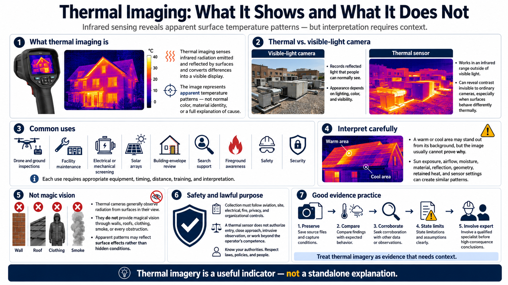

What Is Thermal Imaging?
Connecting to LMS... Progress: in progress

Narration
Thermal imaging senses infrared radiation emitted and reflected by surfaces and converts differences into a visible display. The image represents apparent temperature patterns, not ordinary color, material identity, or a complete explanation of what caused the pattern.
A visible-light camera records reflected light that human eyes can normally see. A thermal sensor works in an infrared range and can reveal contrast that remains invisible to an ordinary camera, especially when surfaces have different thermal behavior.
Common uses include drone and ground inspections, facility maintenance, electrical or mechanical screening, solar arrays, building-envelope review, search support, fireground awareness, safety, and security. Each use requires different equipment, timing, distance, training, and interpretation.
Thermal imagery can show that one area appears warmer or cooler than its background. It usually cannot prove why. Sun exposure, airflow, moisture, material, reflection, geometry, retained heat, and sensor settings may create similar patterns.
Thermal cameras generally observe radiation from surfaces in their view. They do not provide magical vision through walls, roofs, clothing, smoke, or every obstruction. Apparent patterns may reflect surface effects rather than hidden conditions.
Safety and lawful purpose come first. Collection must follow aviation, site, electrical, fire, privacy, and organizational controls. A thermal sensor does not authorize entry, close approach, intrusive observation, or work beyond the operator's competence.
Treat thermal imagery as evidence that needs context. Preserve source files and conditions, compare with expected behavior, seek corroboration, state limitations, and involve a qualified specialist before making high-consequence conclusions.